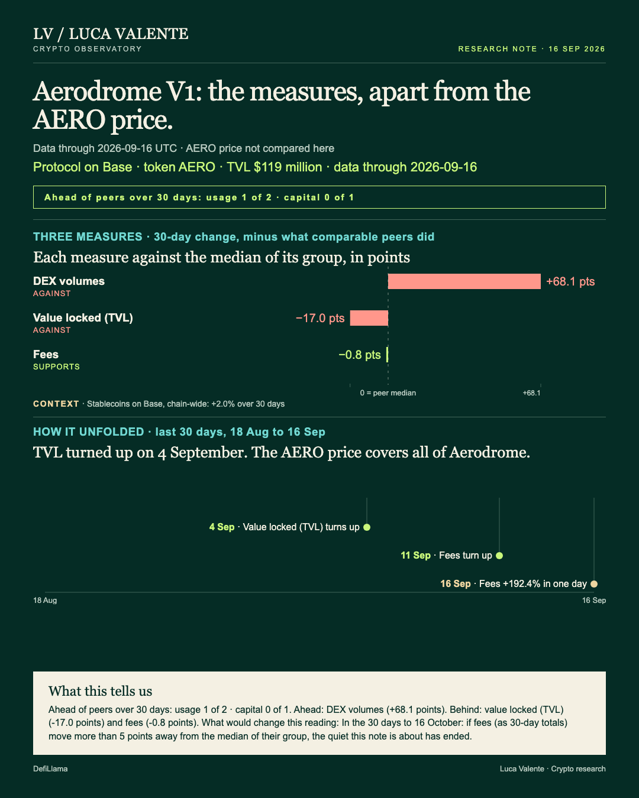
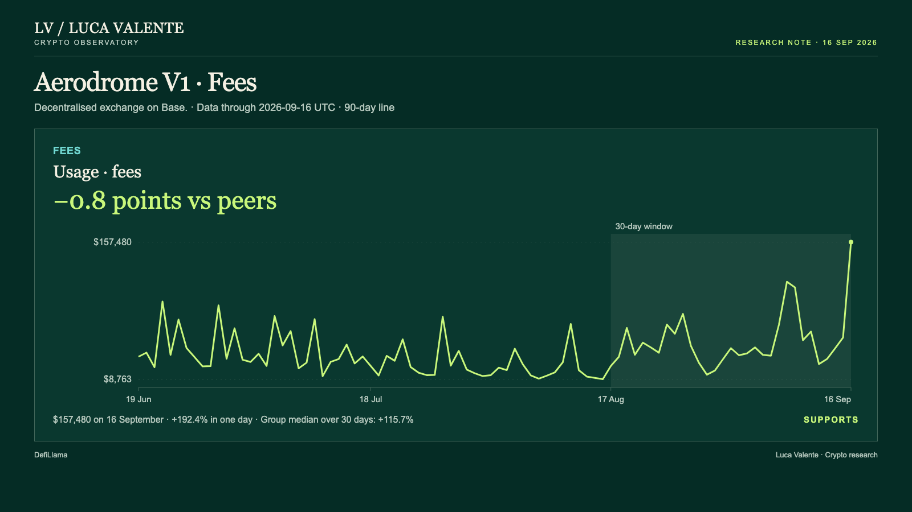
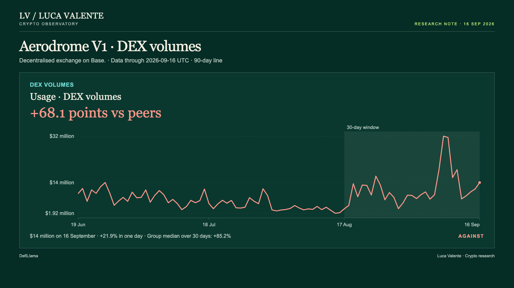

Training note, written on 24 September 2026 from data as of 16 September 2026. Not part of the published series.
Fees Jumped At Aerodrome V1. Its Past Jumps Rarely Held A Week.

Whether one outsized day at Aerodrome V1 means anything, I cannot say yet, and the exchange's own past asks me to wait. For anyone who judges an exchange by its fees, the swap charges traders pay, part of which reaches token holders who vote, a spike and a lasting change look alike on the day. Aerodrome V1 is a decentralised exchange on the Base network, where traders swap one token for another. This note gives it no price: its token, AERO, stands for all of Aerodrome. My starting question is whether it has had days like this before.
The cover sets each measure's last 30 days, to 16 September, against its group's median, in points. Trading volume, the value swapped once pools used by too few distinct addresses are set aside, sits at +68.1. Value locked, the money held in the protocol's contracts, sits at -17.0, and fees at -0.8. Fees and volume are usage, value locked is capital: two families, read apart. The timeline has value locked turning up first, on 4 September, then fees on 11 September; volume turned up that day too.
It has: twelve times, counting only one-day fee jumps at least this large since September 2025. Another 154 came on 14 other protocols in its group. A week later, Aerodrome V1's fees were at or above the jump day's level in 1 case of 12, and a month later in 5 of 12. The group's counts were 46 of 154 and 35 of 145.
A second way of counting them surprised me. Against the average of the week before each jump, Aerodrome V1's fees were higher a week later in 6 of 12 cases, and a month later in 8 of 12. The peak rarely survived a week; the level after it often stayed above the one before.
Today's jump took fees from $53,853 to $157,480, a rise of 192.4%. Volume stood at $14 million that day, and fees per dollar traded moved from 0.47% to 1.13%. Volume alone does not account for the jump.
Adding up the 30 days to 16 September against the 30 before, fees rose 114.9%, from $716,005 to $1.54 million. The median of the 17 exchanges in its group of 26 that report fees, Aerodrome V1 included, rose 115.7%. That leaves it 0.8 points below the median, less than a point apart, which I count as support for a quiet month. For now, fees move with their group over the month, one loud day included.

One figure decides whether the quiet lasts: that gap. In the 30 days to 16 October: if fees (as 30-day totals) move more than 5 points away from the median of their group, the quiet this note is about has ended. Everything here leans on fees keeping step with their group, with no price beside them. The earlier jumps say the test lies in the days after 16 September.
Volume is the first objection. Summed the same way as fees, it rose 153.3%, from $141 million to $357 million. The median of all 26 exchanges in the group, Aerodrome V1 included, rose 85.2%: volume runs 68.1 points ahead. That is far above the middle half of its last 90 days, between -20.0 and -1.9 points. A month with that much extra trading is not quiet. Volume cannot stand in for fees, though: on 16 September the two moved apart.

Deposits are the second objection. Value locked fell 11.7% in WETH, end of window against start, while the median of the 18 exchanges reporting it, Aerodrome V1 included, rose 5.3%, leaving it 17.0 points behind. In dollars it rose 13.2%, to $119 million, but the difference is the price of WETH. A gap that size is ordinary for this line, inside the middle half of its last 90 days, between -21.7 and +3.0 points.
No developer commits are counted for Aerodrome V1, users and wallets are not measured, and nothing after 16 September is included. I have no news or reasons for any of these moves. The question these numbers leave open, and the one that matters most, is how much of that day's fees reached the token holders who vote.
Sources: DefiLlama (fees, trading volume, value locked).
Peer group: 26 exchanges tracked by DefiLlama (who they are). 'Net of the group' is the 30-day change minus the group's median.
Not financial advice. This is a research note based on public on-chain data.